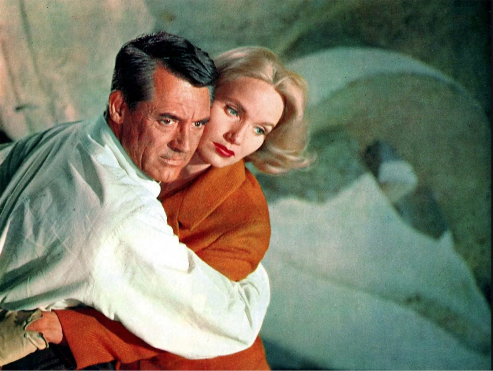
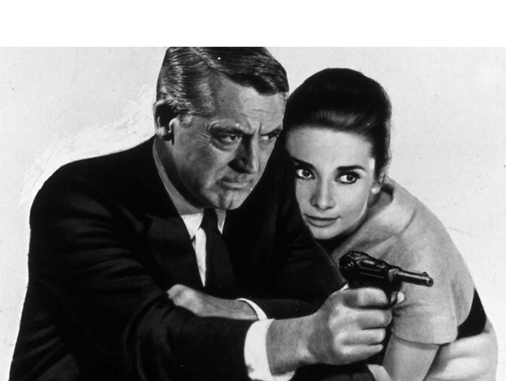
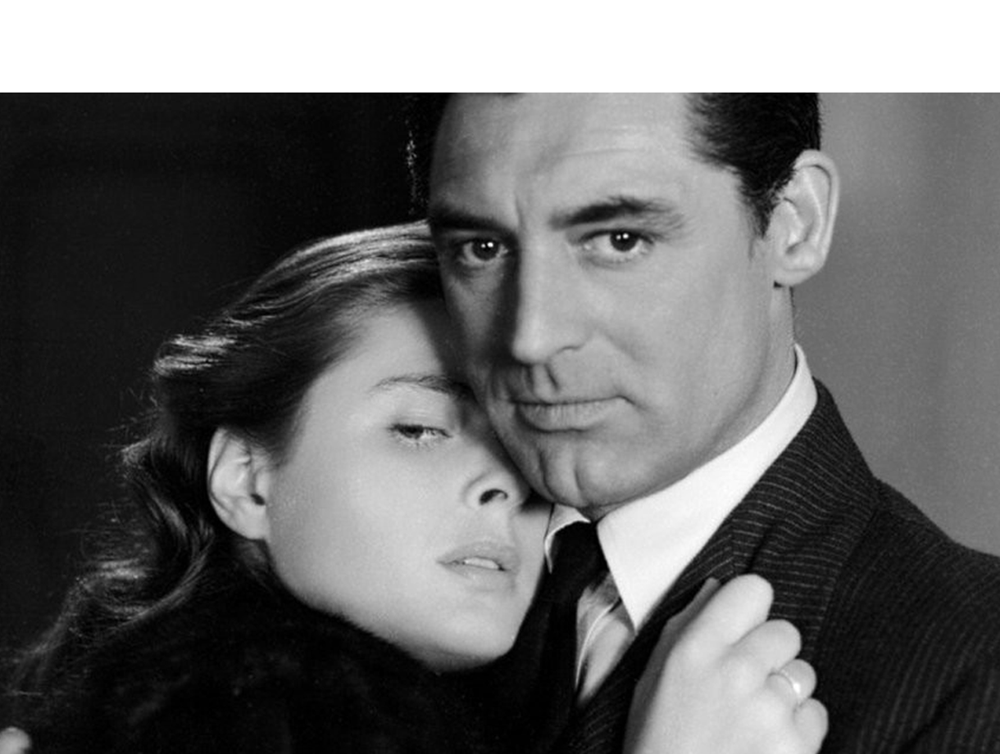
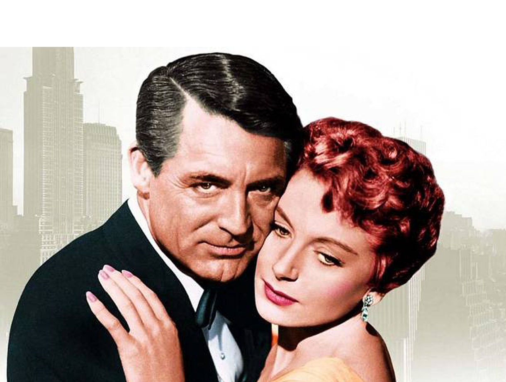
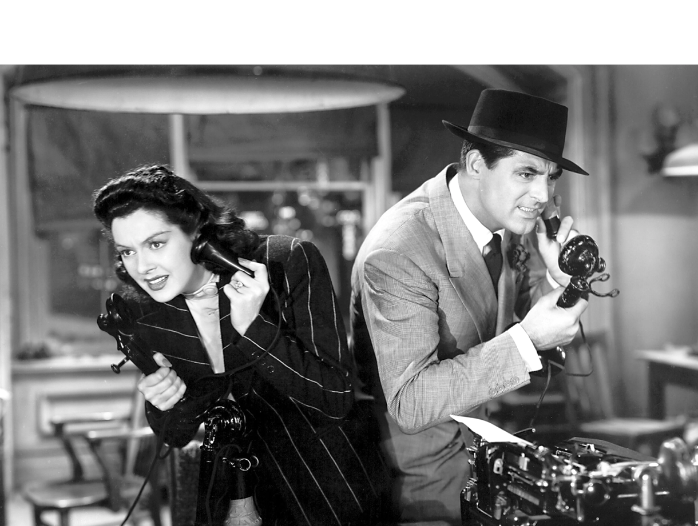
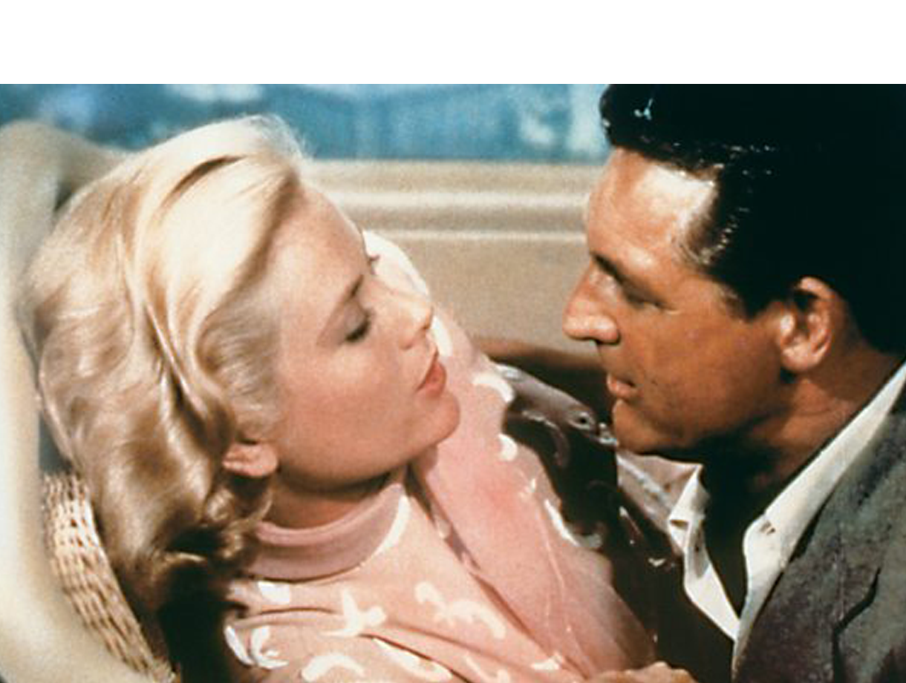
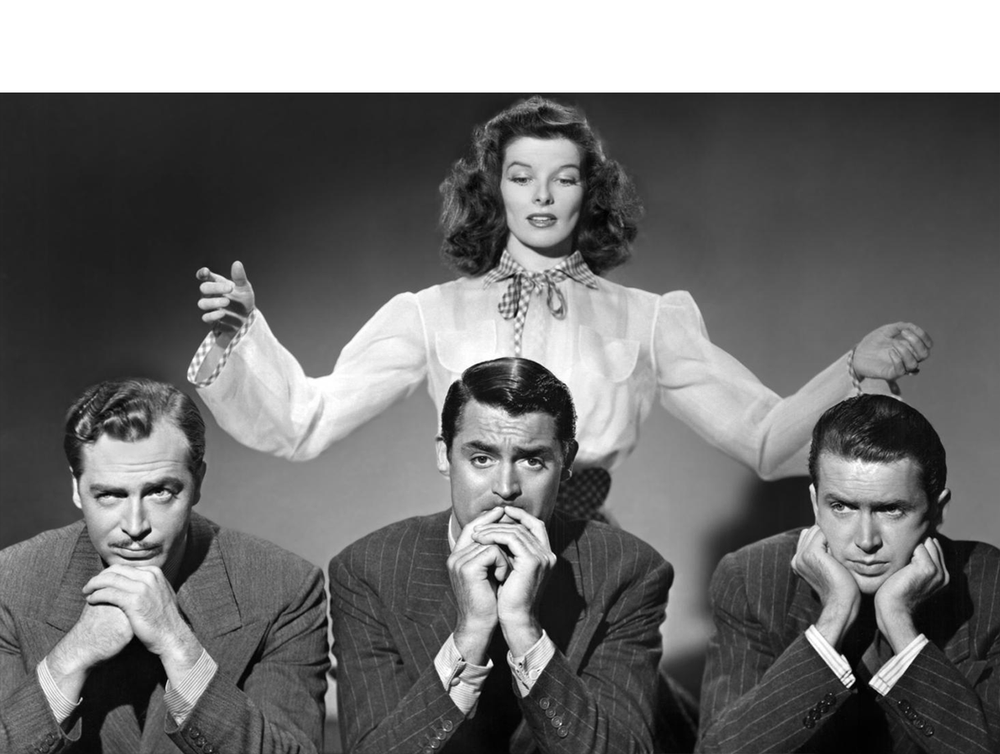
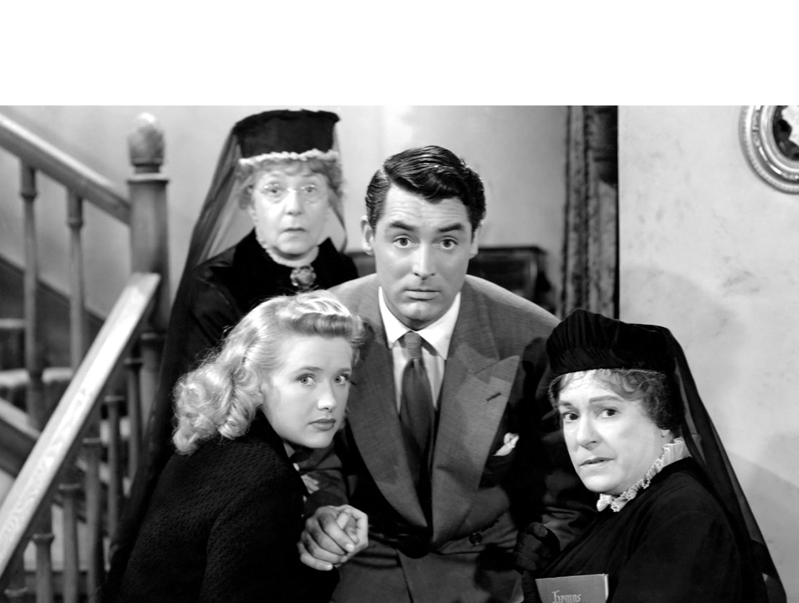
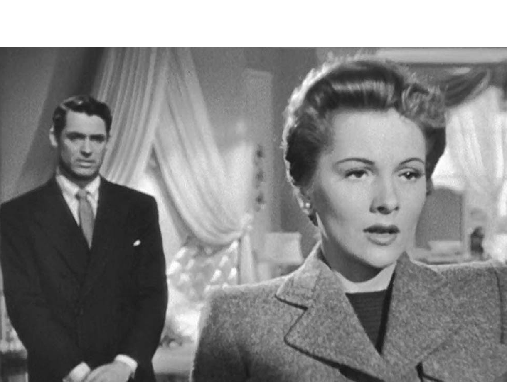
NORT BY NORTH WEST - 1959
DIR - ALFRED HITCHCOCK
CHARADA - 1963
DIR - STANLEY DONEN
NOTORIOUS - 1945
DIR - ALFRED HITCHCOCK
AN AFFAIR TO REMEMBER - 1957
DIR - LEO MCCAREY
HIS GIRL FRIDAY - 1940
DIR - HOWARD HAWKS
TO CATCH A THIEF - 1955
DIR - ALFRED HITCHCOCK
THE PHILADELPHIA STORYS - 1940
DIR - GEORGE CUKOR
ARSENIC AND OLD LACE - 1944
DIR - FRANK CAPRA
SUSPICION - 1941
DIR - ALFRED HITCHCOCK

North by Northwest - SINOPSIS
Due to a misunderstanding, Roger O. Thornhill, an executive in the advertising world, is mistaken by spies for a government agent named George Kaplan. Kidnapped by three individuals and taken to a mansion where he is interrogated, he manages to flee before they kill him. But when he returns home the next day accompanied by the police, he is in for a surprise.

charada - Sinopsis
After spending a vacation at a ski resort where she met Peter Joshua (Cary Grant), Reggie Lampert (Audrey Hepburn) is going to ask her husband for a divorce. But when he arrives in Paris he discovers that he has been murdered and his apartment is empty. At the American embassy they inform her that her husband, along with other accomplices, had stolen a quarter of a million dollars from the United States government. The money is missing and everyone thinks Reggie has it. Peter offers to help, but as the dead bodies mount, it's increasingly difficult for Reggie to know who he can trust


notorious - Sinopsis
After World War II (1939-1945), Alicia Huberman's father, a Nazi spy, is convicted of treason against the United States. After the trial, Alicia throws a party where a handsome stranger named Devlin turns up. It is about an agent of the intelligence services who demands his collaboration to catch Alexander Sebastian, the mastermind of the Nazis in Brazil. She is reluctant at first, but finally agrees, mainly because she has fallen in love with the attractive American agent. Once in Brazil, Alicia wins Sebastian's sympathy and goes to live at his house. But his involvement in the matter ends up putting his life in danger.

An Affair to Remember - Sinopsis
An elegant playboy and a beautiful nightclub singer meet aboard a luxurious ocean liner and a passionate romance ensues between them. Although they are both engaged (she is the mistress of a tycoon and he is marrying a rich heiress), they make a pact before leaving ship: to meet at the Empire State Building in six months if they still feel the same way. for each other.


His Girl Friday - Sinopsis
Hildy Johnson, the best reporter for the Morning Post newspaper, announces that she is leaving journalism to marry and start a family. But Walter Burns, the newspaper's editor and Hildy's ex-husband, is not willing to accept this, so he uses all kinds of tricks to keep her at the newspaper.
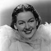
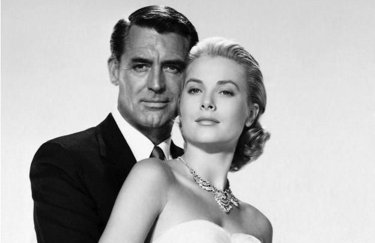
To Catch a Thief - SINOPSIS
Although John Robie "El Gato" (Cary Grant) has abandoned his trade as a jewel thief, he becomes the prime suspect in a series of gem thefts at the most luxurious hotels on the French Riviera; so he will have no choice but to prove his innocence. When he meets a capricious heiress (Grace Kelly), he sees an opportunity to unmask the mysterious thief, using the fabulous jewelry of the young woman's mother as a lure.


the philadelphia story - Sinopsis
The Lord's mansion is preparing to celebrate the second wedding of Tracy Lord (Katharine Hepburn) to the wealthy George Kittredge (John Howard). To immortalize the festivities, a couple of journalists, Macauley Connor (James Stewart) and Elizabeth Imbrie (Ruth Hussey), are specially invited by C.K. Dexter Haven (Cary Grant), Tracy's first husband.

Arsenic and Old Lace - Sinopsis
A recently married theater critic decides to visit his elderly aunts before leaving for their honeymoon. During the visit you will discover that the charming old ladies have a very peculiar way of practicing charity.
Suspicion - Sinopsis
An attractive playboy meets a naive young woman on the train who ends up having to pay for her ticket. Later, they meet again at a party and, after a brief affair, she decides to marry him, despite her father's opposition. Considered by everyone, including her family, a spinster, she is hell-bent on showing them that someone can love her.